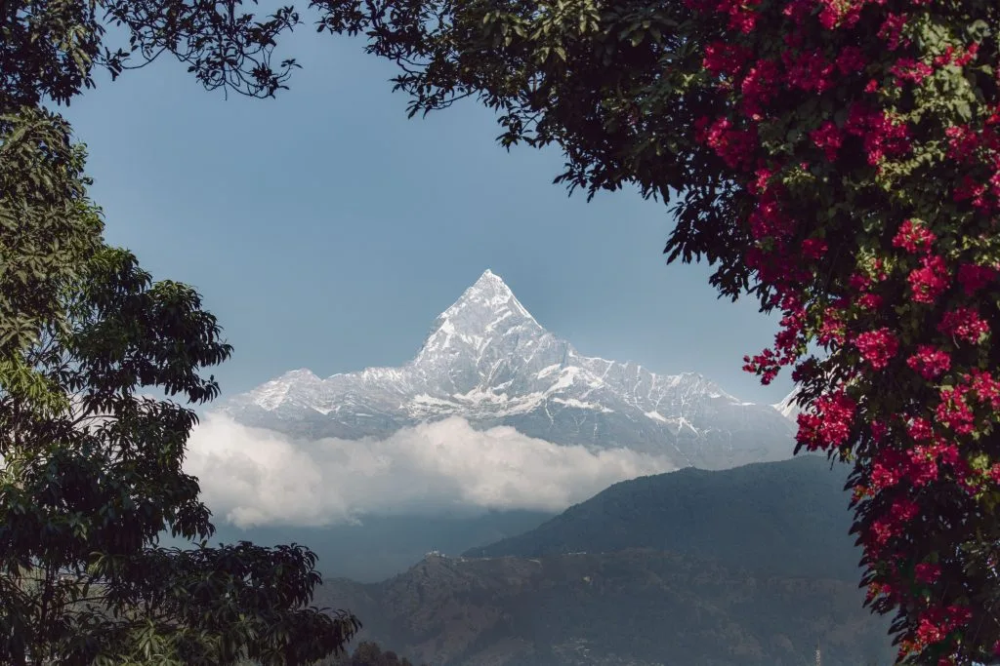
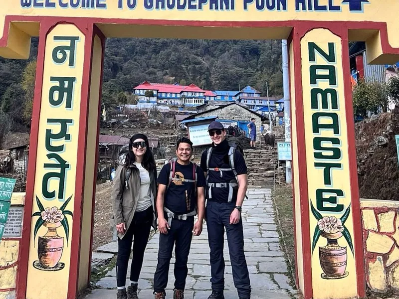
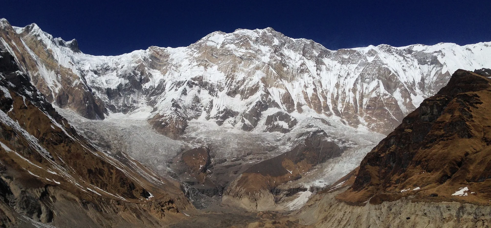
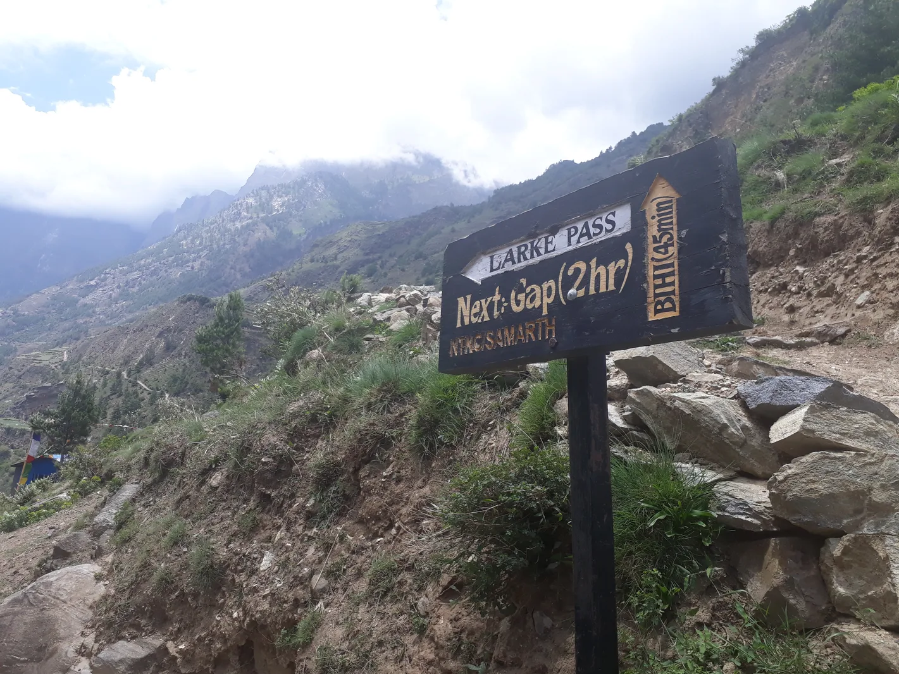
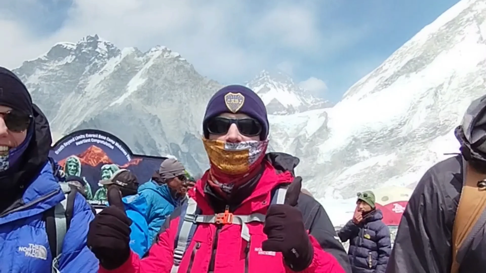
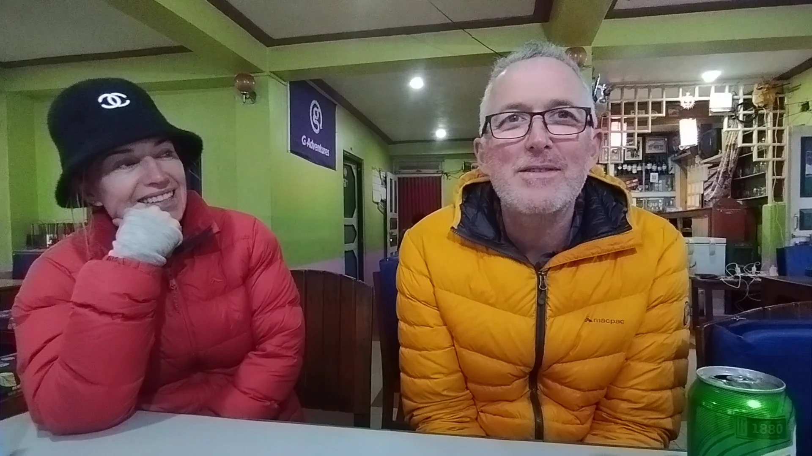
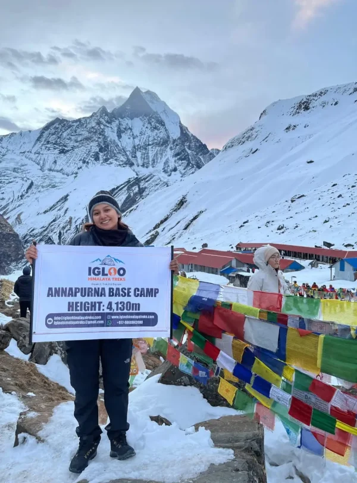
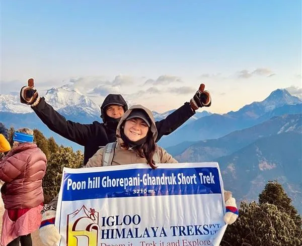

With limited annual leave, this 9-day Short ABC itinerary was ideal. Walking straight through Sinuwa and Deurali took us directly into the Sanctuary without wasting any time. Reaching base camp under Annapurna I and Hiunchuli was awe-inspiring. Sagar guided our pacing with absolute precision and kept our spirits soaring high!
Annapurna Sanctuary • Direct Route via Jhinu Danda
5.0
reviews on TripAdvisor
5.0
169 reviews on Google
Short Annapurna Base Camp Trek — 9 Days
Our nine-day Short Annapurna Base Camp Trek follows the direct route from Jhinu Danda through Sinuwa and Deurali into the Annapurna Sanctuary. You pass Machhapuchhre Base Camp before reaching ABC at 4,130 m, where we stay overnight among the peaks.

Travelers' Choice
Best of the Best 2026




Key Trip Facts
Duration
9 Days
9 days, including arrival, departure, travel and five walking days
Difficulty
Moderate to Demanding
Moderate to demanding, with long stair sections and a compact ascent
Maximum Altitude
4,130 m / 13,550 ft
Approximately 4,130 m at Annapurna Base Camp
Destination
Nepal
Himalayan Region
Activity
Trekking
Mountain Walking
Accommodation
3-Star & Teahouses
3-star hotels in Kathmandu and Pokhara; teahouses during the trek
Transport
Bus & Jeep
Tourist buses between Kathmandu and Pokhara; jeeps to and from Jhinu Danda
Meals
Meals Included on Trail
City hotel breakfasts; meals on the trekking route with tea or coffee; Day 7 dinner in Pokhara excluded
Recommended Season
Spring & Autumn
Spring (March–May) and autumn (September–November)
Trek Starts
Jhinu Danda Area
Jhinu Danda area, after the drive from Pokhara
Trek Ends
Jhinu Danda Area
Jhinu Danda area, followed by the drive to Pokhara
Trek Region
Annapurna
Annapurna
Package Start Point
Kathmandu
Kathmandu
Package End Point
Kathmandu
Kathmandu
Short Annapurna Base Camp Trek Overview
Our Short Annapurna Base Camp Trek reaches the Sanctuary in nine days, including arrival, departure and travel through Pokhara. The walking route starts around Jhinu Danda and continues through Sinuwa and Deurali to ABC at 4,130 m. It suits travellers who can prepare for sustained uphill walking and have fewer days available for the journey.
After arriving in Kathmandu, you travel to Pokhara by tourist bus, then take a jeep towards Jhinu Danda. The first walk climbs through Chhomrong before crossing its river and continuing to Sinuwa. Beyond the villages, you follow the Modi Khola valley through Bamboo, Dovan and Himalaya. Forest paths, river crossings and steep stone steps make up much of the approach, with teahouses providing overnight stops along the route.
From Deurali, the route climbs through mountain terrain to Machhapuchhre Base Camp at 3,700 m. You continue up the valley to Annapurna Base Camp, surrounded by Annapurna I, Annapurna South and Hiunchuli. We spend a night at ABC before retracing the trail through Deurali and Himalaya to Bamboo, our final overnight stop on the trail.
The shorter route leaves out Ghorepani and Poon Hill, keeping the focus on the Sanctuary. There are no dedicated acclimatisation days, and the climb from Sinuwa through Deurali to ABC gains considerable sleeping altitude on consecutive nights. Stone staircases and long walking days require preparation. Discuss a slower ascent before booking if you need more time to adjust to altitude.
You stay in city hotels in Kathmandu and Pokhara, with four teahouse nights during the trek. The nine-day programme covers your arrival, walking journey, return travel and departure.
Short Annapurna Base Camp Trek Highlights
Why Book the Short Annapurna Base Camp Trek with Igloo Himalaya Treks?
We help you prepare in Kathmandu and support your journey through the Annapurna region. This package includes the following arrangements.
Arrival Briefing and Trek Preparation
After arriving in Kathmandu, we introduce the trekking programme and explain the route. You can ask questions about the walking days, accommodation and equipment before travelling onwards to Pokhara.
Guide and Porter Support
An experienced trekking guide leads the route. Porter hire is optional at USD 35 per day, and two trekkers may share one porter to carry their main bags during the trek.
Equipment Provided for the Trek
We provide a sleeping bag , duffel bag and down jacket for use during the trekking days. Bring your own boots, clothing and main bag, and ask us about the supplied equipment before departure.
Communication When Plans Change
Weather and road conditions can affect the travel schedule and higher trails. Our team keeps you informed, explains the options and discusses changes with you, including any additional accommodation or transport costs.
Our nine-day itinerary includes travel from Kathmandu through Pokhara and five walking days to Annapurna Base Camp and back. Times and distances are approximate; weather, road conditions and pace can affect each day’s schedule.
Day 1: Arrival at Tribhuvan International Airport, Kathmandu
Arrival & Airport Transfer — Kathmandu (1,400 m) — Welcome Briefing & Gear Check
Welcome to Nepal. Our representative meets you at Tribhuvan International Airport and transfers you to your hotel in Kathmandu. After checking in, you can rest and receive an introduction to the upcoming nine-day Annapurna Base Camp programme.
Depending on your arrival time, you can explore the nearby streets of Thamel or rest after your flight. This is also a chance to discuss questions before leaving for the Annapurna region.
Day 2: Drive from Kathmandu to Pokhara
Scenic Highway Drive — Pokhara (850 m) — ~7 Hours Scenic Tourist Bus via Prithvi Highway
After breakfast, we leave Kathmandu for Pokhara by tourist bus. The Prithvi Highway follows river valleys through the surrounding hills, with small towns and terraced farmland along the journey west.
The drive usually takes around seven hours, although roadworks and traffic can extend the journey. On arrival, you check into your hotel and have time to rest or walk near Phewa Lake. Clear weather may reveal Machhapuchhre beyond the hills. Prepare your trekking bag for tomorrow’s drive towards Jhinu Danda and the first walking stage.
Day 3: Drive to Jhinu Danda and Trek to Sinuwa
Jeep Drive & Valley Trek — Sinuwa (2,340 m) — ~2–3 Hrs Drive + 5–6 Hrs Trek (5.3 km) via Chhomrong
We leave Pokhara by jeep and drive towards Jhinu Danda. After reaching the trail, we cross a suspension bridge and begin the steady uphill walk towards Chhomrong village.
Chhomrong is a Gurung village spread across the hillside, with mountain views when the weather is clear. The route descends on stone steps to the Chhomrong Khola before climbing again towards Sinuwa. This first stage involves sustained climbs and descents, so take breaks and keep a manageable pace. We spend the night in a local teahouse.
Day 4: Trek from Sinuwa to Deurali
Bamboo & Rhododendron Forest Ascent — Deurali (3,200 m) — ~6–7 Hrs Trek (12 km) along Modi Khola Valley
We leave Sinuwa and enter the forest, descending towards Bamboo before climbing up the Modi Khola valley. The shaded path passes rhododendron and bamboo, with river crossings and shorter stair sections between the scattered groups of mountain teahouses.
Beyond Dovan, we continue through Himalaya towards Deurali. The forest thins and the valley becomes open as we gain altitude. This is a long climbing day, ending at a teahouse around 3,200 m; tell your guide if you feel unwell.
Day 5: Trek from Deurali to Annapurna Base Camp via MBC
Sanctuary Ascent via MBC — Annapurna Base Camp (4,130 m) — ~4–5 Hrs Trek (5.2 km) into the Sanctuary Basin
From Deurali, we follow the upper valley towards Machhapuchhre Base Camp at 3,700 m. Forest gives way to open slopes, with snow or ice possible on the higher sections.
After a break at MBC, we continue towards Annapurna Base Camp. Annapurna I, Annapurna South and Hiunchuli stand around the Sanctuary, with Machhapuchhre behind us. The climb feels more demanding as the air gradually becomes thinner.
We stay in a teahouse at ABC, our highest overnight stop. The sleeping altitude rises about 930 m today; report symptoms promptly and follow your guide’s advice.
Day 6: Trek from Annapurna Base Camp to Bamboo
Sunrise Mountain Views & Descent — Bamboo (2,310 m) — ~6–7 Hrs Trek (18.7 km) Retracing via MBC & Deurali
In clear weather, the morning offers views of the peaks around base camp. After breakfast, we retrace the upper valley through Machhapuchhre Base Camp and begin the long descent.
The route passes Deurali, Himalaya and Dovan before reaching Bamboo. As you lose altitude, open slopes give way to forest and the air usually feels warmer. The long downhill walk still requires attention on steps and uneven ground. Trekking poles can help with balance before we settle into our teahouse.
Day 7: Trek from Bamboo to Jhinu Danda and Drive to Pokhara
Trail Descent & Jeep Return — Pokhara (850 m) — ~5–6 Hrs Trek (11.6 km) via Jhinu + 2–3 Hrs Jeep Drive
We walk from Bamboo towards Sinuwa, descend to the Chhomrong Khola and climb the stone staircase back to Chhomrong. From the village, the route drops towards Jhinu Danda and the road.
An optional hot-spring visit depends on access, conditions and the time available before our drive. The jeep journey returns us to Pokhara, where you check into your hotel after five days of walking. You can rest or walk near Phewa Lake. Dinner in Pokhara is at your own expense tonight.
Day 8: Drive to Kathmandu by Tourist Bus
Return Scenic Tourist Bus — Kathmandu (1,400 m) — ~7 Hours Scenic Drive (203 km) to Capital
After breakfast, we return from Pokhara to Kathmandu by tourist bus. The road follows river valleys through the hills; traffic and road conditions can affect the travel time.
The journey usually takes around seven hours, with stops along the way. On arrival, you check into your hotel and have the remaining time to rest, organise your belongings or explore nearby streets before tomorrow’s airport transfer and departure.
Day 9: Farewell and Airport Transfer
Hotel Breakfast & Departure — Kathmandu (1,400 m) — Airport Transfer & Onward Flight
Your Short Annapurna Base Camp Trek ends today. After breakfast, you prepare for your onward journey. Depending on your flight time, you may have an opportunity for a final walk nearby before leaving the hotel.
Our representative accompanies you to Tribhuvan International Airport for your departure.
What’s Included in the 9‑Day Short Annapurna Base Camp Trek
Airport transfers
Pickup and drop-off for your arrival and departure in Kathmandu.
Scheduled transport
Tourist bus travel between Kathmandu and Pokhara in both directions, plus jeep transfers between Pokhara and Jhinu Danda.
Accommodation
Two nights each in 3-star hotels in Kathmandu and Pokhara, plus four teahouse nights in Sinuwa, Deurali, Annapurna Base Camp and Bamboo during the trek.
Trek meals and drinks
Your hotel breakfasts in Kathmandu and Pokhara, plus breakfast, lunch and dinner while trekking, with a cup of tea or coffee. Dinner in Pokhara on Day 7 is excluded.
Licensed trekking guide
An experienced trekking guide accompanies the walking route; optional porter hire is charged separately.
Permits and entry fees
The Annapurna Conservation Area entry permit for the walking route between Jhinu and ABC.
Trekking equipment
A sleeping bag and down jacket provided for the walking days. Bring your personal clothing, footwear and main bag.
First-aid supplies
A medical kit carried by your guide during the trek.
Trip briefing
An introduction to the programme after arrival in Kathmandu.
Trip extras and certificate
A trip completion certificate and an Igloo Himalaya Treks hat or cap.
What’s Excluded in the 9‑Day Short Annapurna Base Camp Trek
International flights and Nepal visa
Airfare to and from Nepal and your visa fee.
Travel insurance
The cost of your insurance policy, which must cover high-altitude trekking and emergency evacuation.
Emergency evacuation
Helicopter rescue and other evacuation costs, requiring appropriate insurance cover or separate personal payment.
Personal equipment
Boots, clothing, a main bag and other personal items beyond the sleeping bag and down jacket provided.
Extra food and drinks
Drinking water, snacks, desserts, alcoholic drinks and beverages beyond the included meals and tea or coffee.
City lunches and dinners
Meals in Kathmandu and Pokhara, including dinner after the trek.
Teahouse services
Hot showers, Wi-Fi and device charging fees.
Team tips
Gratuities for your guide, porter and drivers.
Porter hire and additional services
Porter charges, upgrades and extra accommodation or transport needed because of delays or itinerary changes.
Short Annapurna Base Camp Trek — 9 Days Dates & Availability
Group Departures
Upcoming Scheduled TreksIf you prefer to trek with other travellers, ask us about upcoming group departure dates. We will confirm whether spaces are available and advise the group price.
Private Trek Dates
Custom Departure DatesPrefer to travel with your own group? Send us your preferred arrival date and number of travellers. We’ll check the arrangements for a private trek.
2026–2027 Guaranteed Scheduled Departures
100% GuaranteedSpring Season 2026
18 Mar — 26 Mar 2026
4 spots remaining
$505 pp
Spring Season 2026
08 Apr — 16 Apr 2026
6 spots remaining
$505 pp
Autumn Peak 2026
06 Oct — 14 Oct 2026
Filling fast
$505 pp
Autumn Peak 2026
24 Oct — 01 Nov 2026
8 spots remaining
$505 pp
Starting Prices
Solo Explorer
1 person
USD 625
per person
Small Group
2–4 people
USD 555
per person
Best Value Deal
Group Special
5–7 people
USD 505
per person
Standard Group
8–14 people
USD 435
per person
Large Group
15–20 people
USD 390
per person
Custom Group
Other sizes
Request a quote
tailor-made
| Group Size | Tier & Room Configuration | Starting Price (Per Person) | Action |
|---|---|---|---|
| 1 person | Solo Trekker / Individual Guide | USD 625 | |
| 2–4 people | Small Group Travel (Duo Rate) | USD 555 | |
| 5–7 people | Best Value Deal / Group Rate | USD 505 | |
| 8–14 people | Standard Group Tier | USD 435 | |
| 15–20 people | Large Group Tier | USD 390 | |
| Other sizes | Custom Groups & Families | Request a quote |
Prices are per person in US dollars. Optional porter hire costs USD 35/day, shared by two if preferred; confirm your final written quotation before booking.
CUSTOM TRAVEL DATES
Ask us about your preferred dates.
Send us your travel dates and group details to receive a customized quote with guaranteed response within 2–4 hours.
What to Pack for the Short Annapurna Base Camp Trek
Pack layers for warmer walking days, cold mornings and evenings, and changing weather at higher elevations. Keep water, a warm layer, rain protection, medicines and valuables in your daypack. Use your main bag for the rest of your belongings.
Hiking Gear
Footwear, daypack, trekking poles and trail essentials
Category Tip: Because the Short ABC route climbs quickly, trekking poles are crucial for pacing and knee joint support on continuous stone steps.
Clothing
Moisture-wicking base layers, warm mid-layers and weather protection
Category Tip: Temperatures drop rapidly once entering the high amphitheater—keep warm layers easily accessible in your daypack.
Sleeping Equipment
Sleeping bag and personal comfort accessories
Category Tip: Even on a fast-paced 5-day itinerary, comfortable sleep is vital for acclimatization and muscle recovery.
Toiletries & Hygiene
Personal hygiene, sun protection, skin care and first aid supplies
Category Tip: Keep small travel-size packs to keep your daypack weight low on this fast-moving 5-day trek.
Electronics
Headlamp, power banks, camera and universal adapters
Category Tip: Upper teahouses have limited solar charging points; having your own power bank avoids waiting in queues.
Documents & Personal Items
Passports, permits, travel insurance, cash and emergency details
Category Tip: Always carry adequate cash in Nepali rupees; ATMs are non-existent beyond Pokhara.
Porter Baggage Allowance & Daypack Advice
Bring your own main trekking bag or use our complimentary waterproof duffel. If you hire a porter, the luggage allowance is 10–12 kg per trekker. Use a compact daypack (5–7 kg) containing daily drinking water, warm fleece, waterproof jacket, personal medications, passport and valuables.
Trek Difficulty and Fitness
The Short Annapurna Base Camp Trek does not require technical climbing skills, but the walking can be demanding. You climb stone staircases and uneven paths on consecutive days. Longer stages take six to seven hours, and the compact ascent leaves limited time to adjust to altitude.
Previous hiking experience is helpful. First-time trekkers should build their endurance before departure and become comfortable walking uphill and downhill with a daypack.
Begin preparing around two to three months beforehand, allowing longer if you are starting from a low fitness level. Gradually combine regular walks, hill hikes and strength exercises. Practise in the boots you will wear on the trek.
Altitude and Acclimatisation
There are no dedicated acclimatisation days in this itinerary. Sleeping altitude rises around 860 m from Sinuwa to Deurali, then another 930 m to ABC on the following day.
Tell your guide promptly about headaches, nausea, dizziness or unusual fatigue. Do not continue to a higher sleeping altitude while experiencing symptoms of altitude illness. If symptoms worsen despite resting at the same elevation, descent is necessary. Reaching Base Camp must remain secondary to your health.
Medical Conditions and Travel Insurance
If you have an existing medical condition, seek advice from a healthcare professional familiar with high-altitude travel before booking. Discuss your planned route and any medicines you take.
Arrange travel insurance for this package. Confirm that your policy covers trekking to at least 4,130 metres, emergency helicopter evacuation and medical treatment in Nepal. Check exclusions, excess charges and the insurer’s emergency assistance procedure. Carry your policy details and emergency contact number.
Accommodation and Room Facilities
You stay in three-star hotels in Kathmandu and Pokhara, with breakfast included, and teahouses during the trek. City hotels offer more facilities, while mountain rooms become simpler as you climb higher.
At Deurali and ABC, expect basic rooms and shared bathroom facilities. Private rooms can be limited during peak periods, and sharing may be necessary. Prepare for cold nights at Annapurna Base Camp, even in spring and autumn.
Food and Dietary Requirements
Trekking meals are included; dinner in Pokhara on Day 7 costs extra. Lodge menus commonly offer dal bhat, noodles, potatoes and soups.
Tell us about allergies or dietary requirements before booking so we can discuss what can be arranged along the route. Explain any strict requirements clearly, including concerns about shared cooking equipment.
Drinking Water
Carry reusable bottles and drink boiled or appropriately treated water. Water from a clear stream or an untreated tap may still contain germs.
Boiling is the most reliable way to kill germs. If boiling is unavailable, filtration followed by disinfection offers broader protection than many portable filters alone. Follow the instructions for your treatment equipment or tablets.
Guide and Porter Support
An experienced trekking guide is included. Optional porter hire costs USD 35 per day and may be shared by two trekkers. Without a porter, you carry your main bag and your daily essentials.
Showers, Charging and Communication
Hot showers, Wi-Fi and device charging cost extra, with availability varying between lodges. Mobile reception and internet connections can be unreliable, particularly higher on the route. Carry a power bank and let family know that you may be out of contact for periods of the trek.
Permits and Documents
The ACAP entry permit is included. Ask us about TIMS registration arrangements before your departure. Carry your passport, insurance details and copies of important documents. Your Nepal visa remains your responsibility, separate from the trekking package.
Road Conditions and Extra Time
Roadworks, traffic and heavy rain can delay travel between Kathmandu and Pokhara. Road access also affects the jeep journeys to and from Jhinu Danda.
Allow extra time before your international departure. Accommodation and transport outside the programme may cost extra if road delays or itinerary changes affect travel.
Altitude Profile of the Short Annapurna Base Camp Trek
Your first trekking night is in Sinuwa, above the road access around Jhinu Danda. Overnight stops then rise through Deurali to Annapurna Base Camp, the highest place you sleep. The return descends to Bamboo before you walk out and drive to Pokhara on Day 7.
PEAK OBJECTIVE
4,130 m
Annapurna Base Camp (Day 5)
HIGHEST LODGE
4,130 m
ABC Teahouses (Day 5)
MID-VALLEY STAGE
3,200 m
Deurali (Day 4)
TRAILHEAD ELEVATION
2,340 m
Sinuwa (Day 3)
Interactive elevation map showing daily gain and acclimatisation stopping points. Switch units below to convert between metres (m) and feet (ft).
Overnight Altitudes
Elevation BreakdownElevations are approximate and follow the overnight stops in our itinerary.
Higher Places You Visit
Acclimatisation & Key Points
Day 3
2,340 m
Sinuwa
Around 2,340 m, your first overnight stop after the climb through Chhomrong.
Day 4
3,200 m
Deurali
Around 3,200 m, where you stay overnight after the long climb through Himalaya.
Day 5
3,700 m
Machhapuchhre Base Camp
Around 3,700 m, a daytime stop before continuing uphill towards ABC.
Day 5
4,130 m
Annapurna Base Camp
Around 4,130 m, the highest planned point and overnight stop.
Machhapuchhre Base Camp is a daytime stop. Annapurna Base Camp is an overnight stop, reached after two consecutive climbing days without a dedicated acclimatisation day.
Weather and Best Time for the Short Annapurna Base Camp Trek
Spring, from March to May, and autumn, from September to November, are generally the best seasons for our short ABC trekking route. Both offer favourable walking conditions and opportunities for mountain views, although rain, cloud, cold weather and snowfall remain possible along the route.
Find out the temperature ranges you will experience along the trail. Toggle between daily variation and monthly averages, and switch units below to convert between Celsius (°C) and Fahrenheit (°F).
Seasonal Weather Conditions
4 Seasons MatrixThese are seasonal patterns; conditions can vary from year to year and during an individual trek.
How Weather Changes Along the Route
Elevation & MicroclimatesWalking from Jhinu Danda through Chhomrong and Sinuwa can feel relatively warm in sunshine. Conditions turn colder around Deurali and ABC, especially in the early mornings and evenings after sunset.
Even during spring and autumn, nights at Annapurna Base Camp can fall below freezing. Wind, cloud and damp clothing can make stops feel colder. Carry warm layers and weather protection whichever month you choose, and follow your guide’s advice.
Which Season Should You Choose?
Trekker Timing AdviceChoose spring if gradually warming days and flowering forests interest you alongside the base camp journey. Choose autumn, particularly October or November, if mountain visibility is your main priority. Winter and monsoon require greater flexibility and preparation for demanding conditions.
Short Annapurna Base Camp Trek Route Map
Fast-paced direct sanctuary route map ascending from Jhinu Danda through Chomrong, Dovan, and Deurali directly to Machhapuchhre Base Camp and Annapurna Base Camp (4,130 m).
Best Himalayan Trekking Reviews
4.9 / 5
(128+ Reviews)
Over 15,000 adventure seekers have explored Annapurna Base Camp, Everest, and Manaslu with Igloo Himalaya Treks.

25 October

18 November

14 April

29 October


Short Annapurna Base Camp Trek FAQs
Clear answers to the most common questions about the Short Annapurna Base Camp Trek, direct route walking, accommodation, and preparation.
General & Route
Can I do this trek without previous trekking experience?
∨
Previous hiking experience helps because the ascent is compact and several days are demanding. First-time trekkers should prepare with consecutive hill walks and discuss fitness and altitude concerns before booking. Technical climbing skills are unnecessary on this route.
What is the highest altitude on this itinerary?
∨
Annapurna Base Camp at approximately 4,130 metres is the highest planned point and overnight stop. You pass Machhapuchhre Base Camp at around 3,700 metres on the way from Deurali before continuing along the valley to ABC.
Does this short route include Ghorepani and Poon Hill?
∨
No. This short itinerary uses the direct approach from Jhinu Danda through Sinuwa and Deurali. Ghorepani and Poon Hill feature in our longer ABC package, which includes the sunrise hike and additional village and forest walking.
Do we sleep at Annapurna Base Camp?
∨
Yes. You stay in a teahouse at Annapurna Base Camp on Day 5, then descend towards Bamboo the following day. Camping is not part of this programme. Expect basic facilities, cold nights and possible room sharing during busy periods.
Are there dedicated acclimatisation days?
∨
No. You climb from Sinuwa to Deurali, then sleep at ABC the following night, with substantial altitude gains. Discuss a longer itinerary and extra acclimatisation time before booking if you have concerns about the ascent.
Is insurance covering trekking to 4,000 metres sufficient?
∨
No. A limit of 4,000 metres falls below Annapurna Base Camp at approximately 4,130 metres. Ask your insurer to confirm coverage for the full route, emergency helicopter evacuation and medical treatment, including relevant exclusions, policy limits and conditions.
Does being fit protect me from altitude sickness?
∨
No. Good fitness helps with the walking demands, but it does not prevent altitude illness. Fit and experienced trekkers can also become unwell. Follow your guide’s advice and report symptoms promptly instead of assuming fitness will protect you.
What should I do if I feel unwell at altitude?
∨
Tell your guide promptly about headaches, nausea, dizziness or unusual fatigue. Do not ascend to a higher sleeping altitude while experiencing symptoms of altitude illness. If symptoms worsen despite rest at the same elevation, descent is necessary.
Do I need to carry my main trekking bag?
∨
Yes, unless you hire a porter. Porter service costs USD 35 per day and may be shared by two trekkers. With a porter, you carry a daypack; keep your medicines, water and valuables with you.
Do I need to bring a sleeping bag and down jacket?
∨
We provide a sleeping bag and down jacket for use during the trek. Bring your own main bag, boots, clothing, toiletries and electronics. Ask us about the supplied equipment before departure if you have particular comfort requirements.
Can I book as a solo traveller?
∨
Yes. You can enquire about joining a group departure or arranging a private trek. Send us your preferred dates so we can check the available options and confirm the price that applies to your booking.
How does the 13-day ABC package differ from this itinerary?
∨
Our Annapurna Base Camp Trek via Poon Hill — 13 Days adds Ghorepani and the Poon Hill sunrise hike before entering the Sanctuary. This nine-day itinerary takes a shorter approach from Jhinu Danda, with fewer days and a compact ascent.
MORE ADVENTURES
You Might Also Like
If you would prefer a longer acclimatisation route, cultural walking, or combining adjacent ridges, compare these packages.
13 Days
Annapurna Base Camp Trek via Poon Hill — 13 Days
The classic 13-day journey adding Poon Hill sunrise and Gurung heritage villages before ascending into the Annapurna Sanctuary.

13 DaysABC With Mardi Himal Trek — 13 Days
Combines the majestic glacial amphitheater of ABC with the tranquil, panoramic ridge trails of Mardi Himal.

9 DaysGhorepani Poon Hill Trek — 9 Days
A gentler cultural journey through rhododendron forests, Gurung villages, and the iconic sunrise viewpoint over Dhaulagiri.
 8 Days
8 Days
Mardi Himal Trek — 8 Days
Trek along a narrow alpine ridge directly beneath Mount Fishtail (Machhapuchhre) with dramatic sunset vistas over Annapurna South.
Enquire about your preferred package for current prices and availability.